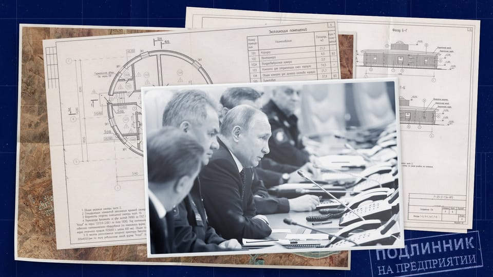

世界苦茶05月29日新闻 | 43条 | 马斯克辞去DOGE并批评特朗普税收政策

马斯克辞去DOGE并批评特朗普税收政策 | 美国贸易法院暂停“对等关税” | 中国扩大中东国家免签 | 俄罗斯核设施信息大泄漏 | 美国将开始撤销中国学生签证 | DeepSeek发布更新版本R1模型
每天三件事：
苦茶数据
美元兑人民币：7.19（昨日7.18，前日7.18）
美元兑日元：145.82（昨日144.32，前日142.17）
上证指数：3355（昨日3339，前日3344）
标普500指数：5888（昨日5921，前日5802）
比特币：108077（昨日108912，前日108396）
布伦特原油：65.68（昨日64.38，前日64.53）
中国新闻
• 美国拟撤中生签证 ：美国国务卿鲁比奥说，美国将开始撤销中国学生的签证，包括与中国共产党有联系或在关键领域学习的学生。鲁比奥星期三发声明指，美国外交部还将修改签证申请标准，以加强对来自中国大陆和香港的所有未来签证申请的审查。中国驻华盛顿大使馆没有立即回应置评请求。
• 捷克指责中国黑客攻击召见中国大使： 捷克外交部5月28日指责黑客组织APT31对捷克外交部通信网络发起网络攻击，没有透露具体损失。捷克外交部称，该组织自2022年起对捷克关键基础设施发起恶意活动。APT31被认为由湖北省国家安全厅支持，捷克外交部召见了中国驻捷克大使，明确表明此类活动对两国关系有严重影响，损害了中国的公信力，违背了其公开声明。美国、北约和欧盟也谴责了此次袭击。美国驻捷克使馆表示，APT31此前曾针对美国人员和关键基础设施部门实体。
• 港警扩招锁定内地港生 ：香港保安局局长邓炳强说，警队空缺率约17.4%，已将招募网络扩大至中国大陆的港生群体；有年轻人曾因刻意抹黑警务人员的假消息误导而产生误解，但随着时间过去，已“开始沉淀下来”。综合香港电台、无线新闻和网媒“香港01”报道，邓炳强星期三在立法会大会上透露，截至今年3月底，香港警队有5765个职位空缺，空缺率为17.4%，与过去三年的数据相若。在2025至2026年财政年度，警队的招聘目标为130名见习督察及1140名警员。有议员质询，香港拼经济需要良好的治安环境，国安风险可能突如其来，当局何时才能填补空缺。邓炳强表示，近年已扩大招募网络，在北京、广东、上海等地招募中国大陆的港生加入警队。 （翻評：內地港生，很快就是在港陸生了。）
• 张国清整治平台乱象 ：中国副总理张国清在上海调研网络零售、直播电商和外卖送餐等平台企业时说，要坚决遏制劣质低价等恶性竞争，对违法违规行为及时采取限流、封号、纳入黑名单等措施，重拳整治各种乱象。据新华社报道，张国清星期二至星期三在上海调研促进平台经济健康发展和市场监管有关工作，强调全面强化市场监管领域治理能力，推动构建平台经济良好生态，维护公平有序市场环境。报道称，张国清先后来到网络零售、直播电商和外卖送餐等平台企业，调研了解企业在消费场景创新、新技术应用、主体责任落实等方面情况。
• 台禁与“国防七子”交流 ：台湾教育部今年起禁止大专院校与中国大陆“国防七子”高校进行学术交流，教育部长郑英耀首度坦言，相关决定是他本人拍板，“国防七子是我选的”。综合台湾《联合报》《太报》和ETToday新闻云报道，郑英耀星期三前往立法院教育文化委员会，处理中央政府总预算有关教育部主管预算解冻案。预计解冻的其中一案为各项教育推展冻结1000万元新台币，主要执行国际与两岸交流工作计划等业务，国民党立委柯志恩因此质疑，教育部当前是否赞同两岸教育活动交流。
• 广州否认“黑人充电宝”传言 ：针对“3000名警察突击检查非法滞留外国人，行动主要针对卖充电宝黑人小哥”的网络传闻，广州白云区三元里街道办予以否认，并指传言将城中村改造项目与外籍人员问题强行挂钩，是恶意关联和蓄意炒作。综合《南方日报》和《南方都市报》报道，有网络传言称：“广州三元里被3000多名警察包围，正开展一场力度超大的整治行动，行动主要针对卖充电宝的黑人小哥，他们总骚扰路人，影响治安。检查时发现10个人里竟有八个签证有问题，不是过期就是用假身份证。”报道称，广州白云区三元里街道正在进行城中村改造项目。上述传言在中国社媒流传后，有网民将“警力部署”和旧改征迁相关联。
• 中国海上军力部署引警觉 ：区域安全官员透露，中国本月在东亚多处海域部署规模异常庞大的海军与海警舰队，展示海上军力，此举已引发周边国家的高度警觉。路透社星期三引述区域安全官员及相关军事动态文件报道，自5月初以来，北京在台湾周边、南日本列岛、东海和南中国海等海域出动的舰队规模明显扩大，涵盖海军、海警以及其他类型舰船。军事文件指出，中国在5月21日与27日分别出动近60艘及逾70艘舰艇出海活动，其中约四分之三为海军舰船，包括导弹护卫舰、驱逐舰和海警船。 （翻評：不斷縮減演訓和實戰的距離。）
• 辽宁舰再现台东南海域 ：台湾国防部通报，中国大陆辽宁号航母编队穿越宫古海峡后，已进入台湾东南方外海活动。日本防卫省统合幕僚监部星期二发布消息指出，辽宁舰编队当天通过冲绳本岛与宫古岛之间的海域，朝东南方向驶入西太平洋水域，期间多次进行舰载机起降演练。综合台湾《中国时报》和ETtoday新闻云报道，台湾国防部情次室情研中心副主任胡中华上校星期三早上说，依目前掌握，辽宁舰编队正位于台湾东南海域，台军已通过情监侦手段全程掌握其动态，并进行严密监控。
• 中国扩大中东免签范围 ：中国扩大免签国家范围，对沙特、阿曼、科威特、巴林四国试行免签政策。中国外交部发言人毛宁星期三在例行记者会上表示，为了进一步便利中外人员往来，中方决定扩大免签国家范围。毛宁宣布，自2025年6月9日至2026年6月8日，对沙特、阿曼、科威特、巴林持普通护照人员试行免签政策。上述四国持普通护照人员赴华经商、旅游、观光、探亲访友、交流访问、过境不超过30天可以免办签证入境。
• 王毅将访港三天 ：香港媒体报道，中国大陆外长王毅将从星期四起访港三天，期间除了出席《关于建立国际调解院的公约》的签署仪式，也会与香港特首李家超等人共进晚宴。大陆外交部发言人上星期二宣布，王毅将出席于星期五在香港举行的《关于建立国际调解院的公约》签署仪式。发言人并未提到王毅将访港多少天，以及他的抵达日期。网媒“香港01”报道，外界一度以为王毅星期五才会抵达香港，因为他星期三至四在福建厦门主持召开第三次中国—太平洋岛国外长会。
• 台指大陆对台“极限施压” ：台湾陆委会主委邱垂正称，中国大陆正对台湾实施“极限施压”，不仅持续升级对台施压手段，还刻意忽视台湾多次释出的善意与橄榄枝。邱垂正星期二在台北的办公室接受路透社专访时指出，“极限施压”包括几乎每天对台进行的军事侵扰和统战渗透，并指责北京应对两岸紧张局势的加剧负主要责任。邱垂正重申，台湾政府秉持平等与尊重的立场，愿意与大陆展开对话。尽管台湾多次伸出橄榄枝并付出诸多努力，但“我们确实看不到大陆方面有任何诚意”。
• 高考报名人数七年来首降 ：中国2025年全国高考报名人数为1335万人，比去年的1342万人减少7万人。根据教育部数据，这是2017年以来高考报名人数首次减少。中国教育部星期三公布上述数字。过去十年中，2015年至2017年的高考报名人数保持在940万左右，2018年上升至975万人，此后稳步上升，去年突破1300万，创下历史新高，直至今年小幅回落。考研趋势也有所变化。据《环球时报》，2025年全国硕士研究生报名人数为388万，较2024年的438万减少50万人，相比2023年减少86万人，是考研报名人数连续两年下降。
• 陆海警巡查遭台方指骚扰 ：中国大陆海警称在金门附近海域进行例行执法巡查，台湾则反驳称此举已构成对金门水域的“常态性骚扰”。据“中国海警”微信公众号消息，中国大陆海警局东海分局发言人朱安庆星期三说，福建海警当天在金门近海依法开展常态性执法行动。朱安庆称，自5月以来，福建海警组织舰艇编队持续加强金门附近海域执法巡查，结合开展海洋伏季休渔专项执法行动，有效加强有关海域管控，切实维护包括台湾在内的渔民合法正当权益和生命财产安全，有力保障厦金海域正常航行和作业秩序。
• 台指陆偷渡存系统性操作 ：台湾海洋委员会指出，过去27起中国大陆人士偷渡台湾的案件中，涉案人员来自15个省份，其中不乏来自内陆地区者。这些偷渡客的说法一致、装备相似，不排除存在系统性操作的可能。综合台湾《联合报》《自由时报》报道，过去一个月，陆续有中国大陆人士企图以橡皮艇偷渡赴台。在台湾总统赖清德就职周年当天，两名大陆男子驾驶舢舨偷渡至金门二胆岛；仅隔三天，又有一名大陆男子借助游泳圈漂浮企图偷渡至金门大胆岛时被捕。这些案件的涉案人员大多表示要“投靠台湾”“投奔自由”。但台湾海巡署质疑，频繁发生的偷渡事件可能不是孤立事件，不排除中国大陆试图通过低成本手段开展认知作战，意在最大程度扰乱台方民心士气。
• 英驻美大使称中英难复旧好 ：英国驻美大使表示，中英两国的关系不太可能回到十年前的状态。据彭博社，英国驻美国大使曼德尔森星期二在由大西洋理事会于华盛顿举办的一场活动上表示，美国及其跨大西洋盟友必须建立科技伙伴关系，并赢得人工智能竞赛，因为中国正稳步推进相关技术发展。他警告称，如果中国在人工智能和其他关键技术上继续领先，后果将不堪设想。“我最担心的就是中国在科技主导权的竞赛中取胜。”
亚太印太新闻
• 拉菲兹辞任马国经济部长 ：寻求连任公正党署理主席失败的拉菲兹，已提呈辞职信给首相安华，辞去经济部长职位。拉菲兹星期三发文告指出，他的呈辞将在6月17日生效。《中国报》引述他说：“今天起，我开始请假至6月16日。”
• 日本拟引进外国司机 ：日本运输业面对严重人手不足，为了应对外国游客的增加，当局准备积极引进外国人司机。不过，当局也对外国人要考职业驾驶存在不安，除了日语考试门槛高，道路安全更是一大难关。为了填补卡车、公共汽车和出租车司机的人力缺口，日本政府希望在今年发放“特定技能”的居留准证给外国人司机。2018年，为了扩大引进护理人员设立了“特定技能”居留准证。这个资格后来延申到建筑、汽车修理、航空、旅馆业等领域。
科技新闻
• DeepSeek开源新版本挑战o3 ：今天凌晨，开源大模型平台DeepSeek开源了R1最新0528版本。DeepSeek目前没有对该版本进行任何说明，又只是 “悄悄” 地开放了模型。估计很快会放出模型卡介绍更多功能。但已经有网友迫不及待的对新版R1进行测试，在著名代码测试平台Live CodeBench中显示，其性能可以媲美OpenAI最新的o3模型高版本。也有网友对新版R1的风格进行了测试，几乎和OpenAI的o3差不多。R1-05-28具有 o3-2.5 专业风格的响应。箭头/星号的使用与 OpenAI 的 o3 风格非常一致，结尾处 “why it works”的表述更具说服力。 （翻评：我觉得是R2难产的权宜之计，改变应该不大。）
• Nvidia二季度营收预测不及预期，美销售限制将致H20营收损失80亿美元 ：Nvidia(英伟达)第一财季营收超出预期，但第二季营收预测低于市场预期，该公司预计美国收紧其向中国出口人工智能芯片的限制将导致营收损失80亿美元。Nvidia预计第二季营收为450亿美元上下浮动2%，根据LSEG汇编的数据，分析师平均预期为459亿美元。Nvidia股价在盘后交易中仍上涨了3%。
• 字节跳动内部禁用Cursor等AI编程工具 ：周三，字节跳动安全与风控部门发布邮件表示，出于对防范数据泄露风险的考虑，自6月30日起，内部分批次禁用第三方人工智能开发软件，包括AI编程工具Cursor、Windsurf等，将字节跳动旗下编程助手Trae作为替代方案。Trae是字节今年三月发布的人工智能编程工具，搭载基座大模型doubao-1.5-pro，支持切换满血版 DeepSeek R1&V3，是国内首个人工智能原生IDE。Trae海外版也已上线，五月正式推出付费订阅方案。字节官方暂未回应。
财经新闻
• 美国国际贸易法院5月28日裁定暂停特朗普政府4月2日宣布的所谓“对等关税”： 3名法官（分别由里根、奥巴马和特朗普任命）一致认为，特朗普关于关税制定权的主张不受任何期限或范围的限制，这种全球和报复性关税超出了《国际应急经济权力法》授予总统的关税权力，违反了法律。法官表示，国会而非总统有权在多数情况下征收关税，而特朗普的关税不符合允许他单独行动的“不寻常和非常威胁”的有限条件。特朗普政府已提起上诉。白宫发言人称，“非民选的法官”无权决定如何妥善应对国家紧急状态，政府致力于使用所有行政权力来应对这场危机。
• 中国或放松对欧稀土管制 ：中国官媒称，中国商务部加强与中欧晶片企业在稀土管制出口上的沟通，或预示着放松对欧晶片企业的稀土出口管制。《中国日报》引述多名知情人士报道称，中国商务部在星期二召开的中欧半导体上下游企业座谈会上，对稀土出口管制政策进行了宣讲，加强与中欧晶片企业在稀土管制出口上的沟通。知情人士称：“商务部产业安全与进出口管制局在会上对稀土出口管制政策进行了宣讲，以方便企业及其相关供应商了解如何申请出口许可。”
• Shein伦敦IPO受阻转香港 ：路透社星期三引述三名知情人士说，在线快时尚零售商希音计划在英国伦敦进行的首次公开 募股，未能获得中国监管机构的批准，目前该公司正致力于在香港上市。一名知情人士称，希音计划在未来几周内向香港证券交易所提交招股说明书的草案。两名知情人士说，希音计划年内在香港上市。两名知情人士说，希音计划更改上市的地点，原因是其伦敦IPO尚未获得中国监管机构的批准，尤其是中国证券监督管理委员会。
• 美工厂设备订单大幅下滑 ：美国工厂4月份接到的商业设备订单出现10月以来最大降幅，表明在关税和税收政策的不确定性之下，投资兴趣正在减弱。美国商务部星期二公布的数据显示，核心资本货物订单价值上月下降1.3%，此前3月数据经向上修正后为增长0.3%。此类货物出货下降0.1%。所有耐用品订单下降6.3%，主要受商业飞机订单减少拖累。
• 美拟收回达尔文港引中美角力 ：澳大利亚政府正计划向中国企业收回达尔文港的租约，引发北京不满。最新消息称，一家美国企业正准备竞购这港口，使这个具战略意义的海事设施埋下中美博弈的伏笔。受访学者指出，达尔文港目前属澳洲内政事务，关键在于堪培拉如何处理。这一事件也被视为近年来逐步回暖的澳中关系的一块“试金石”。2015年，澳北领地政府将达尔文港的99年租约，以5亿零600万澳元出售给中国山东民营企业岚桥集团。
• 印尼修法吸引外资建信心 ：为了吸引外资，印度尼西亚拟修法来提高法律确定性，这项提议获印尼最高法院积极回应。提议一旦通过，也将为家庭办公室在印尼投资提供更多便利。不过法律专家指出，法律还必须有司法部门的良好治理加以配合，才能达到预期效果。印尼国家经济委员会主席卢胡特星期一在峇厘岛龟乐岛经济特区出席座谈会时，介绍印尼政府吸引外资、打造更多金融中心的计划。他说，印尼长时间面对资金外流问题，归根结底源于投资者对体制的信任不足。目前在印尼，来自不同国家的诉方和辩方在仲裁过程中，可通过上诉蓄意扰乱或拖延程序。这增加了法律程序的不确定性。
• 兴业银行实习项目引争议 ：兴业银行此前推出针对大额存款客户的增值服务，称可推荐客户子女到知名企业实习。这一消息在互联网引发特权争议后，兴业银行道歉，并称已暂停该项目。兴业银行总行星期二下午回应称，该行私人银行部推出菁英企业实习计划，引发公众关切和媒体报道。该行对该项目在推广中表述不完整造成的误解，深表歉意。鉴于该项目引起争议，经审慎评估，已暂停该项目。此前网民发现，兴业银行私人银行在微信公众号发文称，“2025菁英实习计划”正式启幕，可以为高净值客户子女量身打造实践机会。其中不乏摩根大通、摩根士丹利、高盛、中金资本、谷歌、微软、字节跳动、中信建投等。
• 美联储承认通胀和失业率恐同时攀升，将面临艰难取舍 ：美联储5月6-7日会议的记录显示，决策者在会上承认，他们未来几个月可能面临“艰难的取舍”，即通胀和失业率双双上升的情况。对金融市场波动的担忧，以及联储工作人员发出的衰退风险上升的警告，更是支持了这一前景。美联储决策者和工作人员就特朗普政府政策可能的影响进行了重要讨论。决策者在会议上指出，在此之前几周债市的波动“需要监控”，这可能对金融稳定构成风险，并指出美元避险地位的变化，以及美债收益率上升，“可能对经济产生长期影响”。
俄乌战争
• 俄土支持重启俄乌谈判 ：俄罗斯支持由土耳其作为东道国，举行它与乌克兰的下一轮和平谈判；此前两国在美国寻求停战的努力之下进行了第一轮会谈，但未取得任何进展。俄罗斯外长拉夫罗夫星期二在莫斯科与土耳其外长费丹会谈后说：“我们感谢土耳其愿意继续协助这一谈判，并推动和平解决。”本月，俄乌两国在伊斯坦布尔举行了2022年俄罗斯入侵乌克兰以来的首次直接会谈。在会谈期间，莫斯科拒绝接受美国提出的为期30天的停火方案，并重申强硬的停战要求；侵略战争已进入第四年。欧洲国家和美国支持教宗良十四世提出的在梵蒂冈举行谈判的提议，但俄罗斯拒绝这一想法。
• 克里姆林宫回应特朗普警告 ：美国总统特朗普抨击俄罗斯总统普京对乌克兰的袭击是在“玩火”，克里姆林宫回应说，感谢特朗普为推动和平作出的努力。路透社报道，克里姆林宫发言人佩斯科夫星期三说，俄罗斯将继续与美国保持联系，并指出国家利益对普京至关重要。佩斯科夫说，尚未决定与乌克兰下一轮会谈的地点，但将选择对各方都合适的场地。
• 乌克兰冲突加剧之际，特朗普再次表达对普京的不满 ：美国总统特朗普再次表达了就乌克兰冲突加剧对俄罗斯总统普京的不满。不过特朗普也表示，他尚未准备好对俄罗斯实施新制裁，因为他不希望这些制裁破坏潜在的和平协议。俄罗斯外长拉夫罗夫称，俄已提议于6月2日在伊斯坦布尔与乌克兰举行下一轮直接会谈。乌克兰尚未立即回应。当被问及普京是否可能故意拖延谈判时，特朗普称，“我们将弄清楚他是否在利用我们，如果是，我们将做出略微不同的回应。”
• 普京结束俄乌战争的条件包括书面承诺北约决不东扩 ：据三位了解谈判情况的俄罗斯消息人士称，普京提出的结束乌克兰战争的条件包括要求西方领导人以书面形式承诺停止向东扩大北约组织，也就是正式排除乌克兰、格鲁吉亚、摩尔多瓦和其他前苏联加盟共和国加入北约的可能性。消息人士说，俄罗斯还希望乌克兰保持中立，取消一些西方制裁，解决俄罗斯在西方被冻结的主权资产问题。
• 泽连斯基称俄罗斯在乌克兰东北集结超过5万兵力，准备发动进攻： 乌克兰总统弗拉基米尔·泽连斯基表示，俄罗斯已在乌克兰东北部苏梅地区附近集结了超过5万兵力，其中包括一些最精锐的部队，但基辅方面已采取措施，防止其展开大规模攻势。这次兵力集结正值俄罗斯似乎正准备在夏季对乌克兰发动新一轮攻势，而乌克兰方面则在等待莫斯科提交一份说明其停火谈判条件的备忘录。
• 严重安全漏洞，俄核设施蓝图泄露于公共采购数据库： 丹麦的Danwatch与德国《明镜周刊》的记者通过抓取和分析超过200万份公共采购数据库文件，发现其中详细披露了俄罗斯核设施的布局。这项调查揭示，包括一些最保密的建筑工程在内，欧洲公司竟参与了这些设施的现代化改造。据《明镜周刊》独家报道，这些俄罗斯采购文件暴露了一些世界上最机密的施工场所。“文件中甚至包含核武器发射井的楼层平面图和基础设施细节，”报道指出。德国建筑材料和系统巨头Knauf以及众多其他欧洲公司被发现通过本地小公司和子公司间接参与了这些工程。Knauf已谴责俄罗斯入侵乌克兰，并宣布将在2024年退出俄罗斯业务。Knauf对《明镜周刊》表示，他们仅与独立经销商交易，无法控制最终谁在俄罗斯使用其材料。Danwatch也指出，公共数据库中泄露的“数百份详细蓝图”让俄罗斯核设施易受攻击。文章写道：“这起巨大的俄罗斯安全漏洞暴露了俄罗斯核现代化计划最核心的部分。”“这是史无前例的。”
其他新闻
• 欧盟解除对叙制裁 ：欧盟宣布解除对叙利亚的所有经济制裁，以支持叙利亚的重建和复苏经济。路透社报道，欧盟理事会星期三做出上述宣布，并指出将继续监测叙利亚局势发展，随时准备对侵犯人权者和加剧叙利亚不稳定局势的人采取进一步的限制措施。欧盟也说，目前保留对叙利亚前总统阿萨德政府相关，以及对与3月暴力事件相关的个人和组织实施的制裁。
• 美或扩大学生签证审查 ：美国政府据报已暂停新的学生签证面谈，同时考虑扩大对国际学生社交媒体审查范围。不过，美国驻华大使馆星期三称，目前没有收到相关信息，包括申请和面谈在内的签证办理一切正常进行。哥伦比亚广播公司引述一份日期为星期二、由国务卿鲁比奥签署的电报说，特朗普政府正在考虑要求所有申请到美国留学的国际学生接受社交媒体审查，为准备实施这一审查要求，政府已指示全球各地美国使领馆暂停为学生和交流访问学者签证申请者安排新的面谈。此前已经预约好的签证面谈仍然可以进行。对此，中国央视新闻星期三上午致电美国驻华大使馆，询问目前学生签证是否已全面暂停受理。
• 特朗普限哈佛外生比例 ：美国总统特朗普继续向哈佛大学施压，称哈佛应将外国学生比例限制在不超过学生总数的15%。特朗普星期三在白宫说：“我认为哈佛的上限可能应该设在15%左右，而不是31%。美国有很多人想进入哈佛和其他学校，但因为外国学生导致他们无法入学。”根据哈佛的数据，截至2023年秋季学期，国际学生占该校学生总数的27%以上。目前，哈佛大学招收了近6800名国际学生和学者，他们来自140多个国家和地区，其中大多数在攻读研究生课程。
• 马斯克批特朗普支出法案，辞去DOGE职务 ：美国亿万富翁马斯克批评特朗普总统提出的“宏大而美丽的”税收和支出法案，称法案削弱他为缩减美国预算赤字所做的努力。路透社报道，马斯克在星期二晚间播出的哥伦比亚广播公司《星期日晨间》节目采访摘录中说：“坦白说，我对这项庞大的支出法案感到失望，它不仅没有减少预算赤字，反而增加预算赤字，并且破坏政府效率部团队正在做的工作。”马斯克也说：“我认为一项法案可以宏大，也可以美丽。但我不知道它能否两者兼有。”埃隆·马斯克5月28日宣布辞去“特别政府雇员”职务。该消息亦得到白宫官员证实。“特殊政府雇员”在一年内工作时长不得超过130天，这意味着自特朗普上任起算，马斯克的任期最迟应在5月30日结束。 （翻評：特馬蜜月期也太短暫了。）
• 美多州起诉削减科研多样性 ：美国多州于当地时间28日在纽约曼哈顿联邦法院提起一项诉讼，寻求阻止特朗普政府大幅削减用于增加科学、技术、工程和数学领域多样性的科学研究以及相关项目的联邦资金。美国16个州的总检察长表示，特朗普政府没有权力限制研究资金，也没有权力取消国会授权的由美国国家科学基金会提供的多元化项目。周三的诉讼还对美国国家科学基金会的拨款上限以及取消旨在促进女性、少数族裔和残疾人士参与 STEM 领域的项目提出质疑。各州表示，这两项举措都可能导致美国失去其在 STEM 研究领域的全球领先地位。他们表示：“机构将无法维持必要的研究基础设施，并将被迫大幅缩减或停止研究、放弃大量项目并裁员。”
• 特朗普提加拿大入金穹代价 ：美国总统特朗普说，如果加拿大要加入美国“金穹”天基导弹防御系统，须要支付610亿美元。新华社引述特朗普星期二在社交媒体上的贴文说，加拿大“非常希望”成为“金穹”系统的一部分，如果它继续保持独立国家地位，要为此支付610亿美元，但“如果他们成为美国珍视的第51个州，则无须支付任何费用”。特朗普说，加拿大正在考虑这一提议。特朗普上星期二下午在白宫发布了名为“金穹”的天基导弹防御系统的发展规划，整个系统将耗资约1750亿美元。加拿大总理卡尼上星期三说，加拿大正寻求投资这一系统。
• 美防长赫格塞思将首次出席香格里拉对话，寻求拉拢亚洲盟友 ：美国官员向路透表示，在特朗普政府对亚洲地区的承诺仍存在疑问之际，美国国防部长赫格塞思本周将赴新加坡出席香格里拉对话，试图说服亚洲防务领导人，对该地区来说美国是更值得信赖的合作伙伴。赫格塞思周六将发表长篇讲话，阐述他对美国在印度-太平洋地区国防政策的构想。
• 伊朗或暂停铀浓缩，换取美国承认伊朗核权利并解冻资金 ：两名伊朗官方消息人士称，如果美国解冻伊朗资金，并承认德黑兰有权根据一项可能促成更广泛核协议的"政治协议"提炼民用铀，伊朗可能会暂停铀浓缩活动。这两位接近谈判团队的消息人士称，如果华盛顿接受德黑兰的条件，那么"很快就能与美国达成政治谅解"。其中一位消息人士称，在与美国的会谈中"尚未讨论"此事。
• 沙特阿拉伯针对“不听话女性”的神秘“改造监狱”： 一名身穿黑色长袍的年轻女子出现在沙特阿拉伯西北部某城市的二楼窗台上，身处危险之中。另一张照片显示一群男子在一台起重机的协助下将她护送下楼。这名女子身份不明，但据称她曾被关押在沙特臭名昭著的某个秘密“监狱”中，这些监狱专门关押那些因“不服从”、婚外性行为或擅自离家等原因被家人或丈夫“放逐”的女性。这些设施罕见地揭示了数百甚至更多被拘押的女孩和年轻女性的境遇——她们被“再教育”以便回归家庭。在一个女性权利声音似乎被压制的国家，公开谈论或发布这些“看护之家”（Dar al-Reaya）的画面已变得不可能。但在过去六个月中，《卫报》收集到有关这些机构内部情况的证词：它们被描述为“地狱般”的场所，有每周鞭刑、强制性的宗教教育，且完全隔绝于外界，没有探视、没有联系。